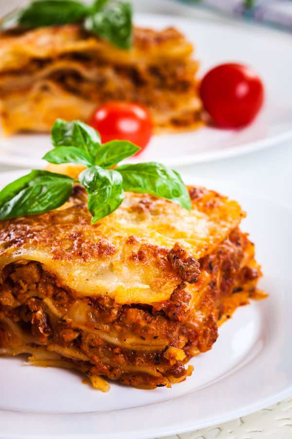

Recette pour Lasagnes

Cuisiner des Lasagnes
Recette de lasagne au fromage blanc classique.
Ingrédients nécessaires
- 9 lasagna noodles
- ½ cup butter
- 1 onion, chopped
- 1 clove garlic, minced
- ½ cup all-purpose flour
Etapes
- Preheat the oven to 350 degrees F (175 degrees C)
- Bring a large pot of lightly salted water to a boil. Add lasagna noodles and cook for 8 to 10 minutes or until al dente; drain and rinse with cold water.
- Meanwhile, melt butter in a large saucepan over medium heat; stir in onion and garlic. Whisk in flour until lightly browned and onion is tender, about 2 minutes. Add chicken broth, milk, and salt; cook, whisking continuously, for 1 minute.
- Stir in 2 cups mozzarella and 1/4 cup Parmesan until well combined. Season with basil, oregano, and black pepper; remove from heat and set aside.
- Bake in the preheated oven for 35 to 40 minutes.
Autres recettes